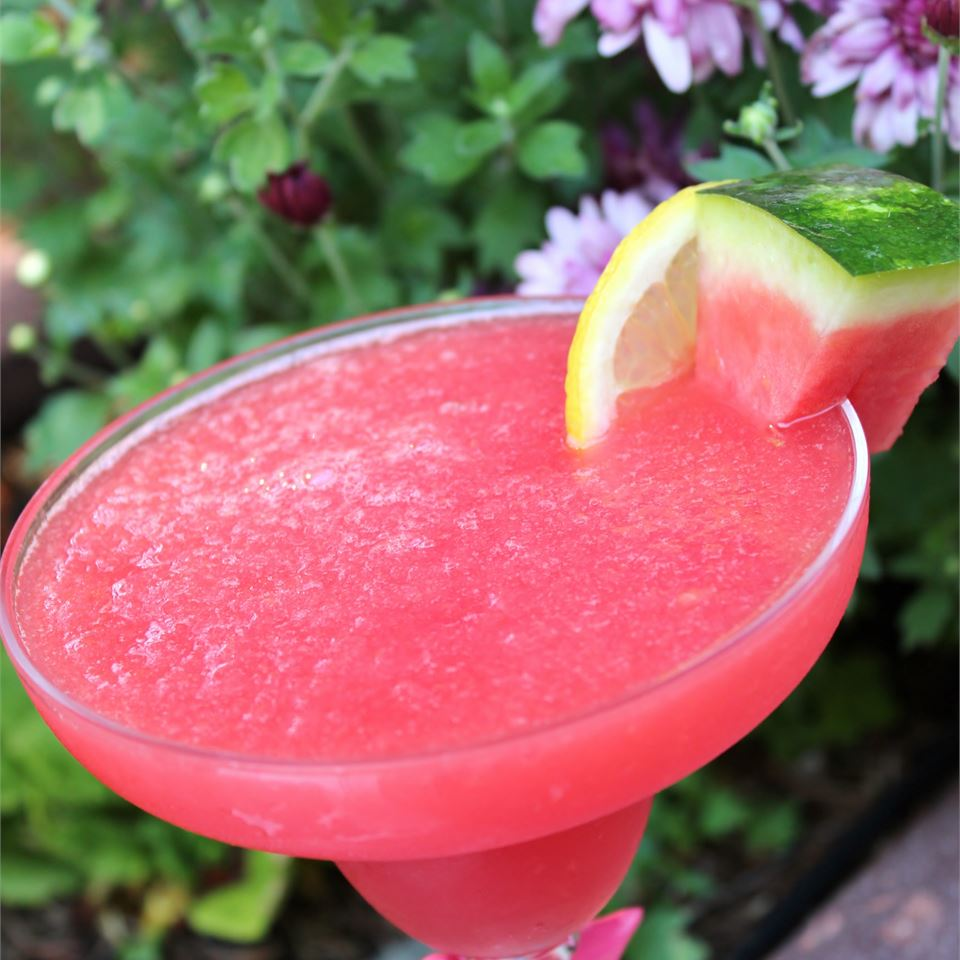

Watermelon Lemonade Slush

Description
Refreshing summer beverage with just watermelon and lemonade, with some alcohol added maybe for adults.
5 minutes and serves 2 people
Ingredients
- 1 cup cubed seeded watermelon
- 1¼ cups water
- 3 tablespoons sweetened strawberry lemonade drink mix
Steps
- Place the watermelon pieces onto a plastic-wrapped baking sheet, and freeze until solid, about 45 minutes.
- Place the frozen watermelon, water, and strawberry lemonade drink mix in a blender; blend until slushy.